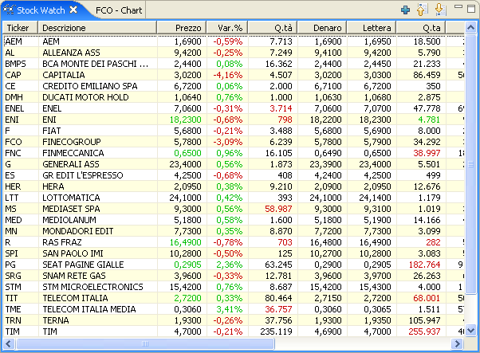
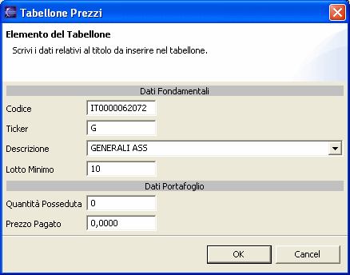
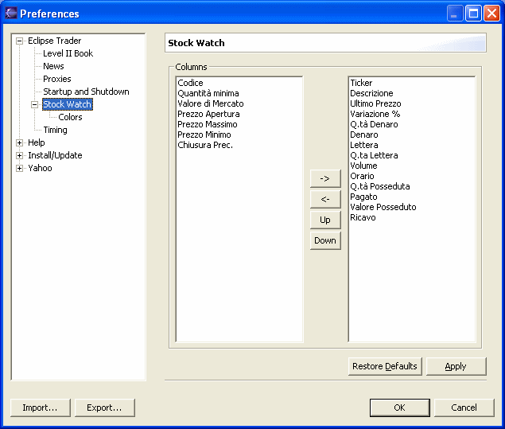

La finestra del Tabellone Prezzi viene mostrata selezionando Show Stock Watch dal menu Window.

La finestra permette di tenere sotto controllo l'andamento dei prezzi delle azioni selezionate.
La barra degli strumenti di questa finestra consente di aggiungere un titolo all'elenco e di spostare il titolo selezionato verso l'alto o verso il basso. L'elenco infatti non viene ordinato automaticamente ma mantiene l'ordine con cui vengono inseriti i titoli, con la possibiltà di variare la posizione mediante la barra degli strumenti.
Cliccando con il tasto destro del mouse si apre un menù che consente di modificare l'elenco delle azioni e aprire le finestre relativi ai grafici storici, grafici intraday e book multilivello per il titolo selezionato.
Selezionando la voce Aggiungi o Modifica sarà possibile inserire un nuovo titolo oppure modificare i dati relativi al titolo selezionato.

Codice
Codice ISIN del titolo. Per i mercati esteri è il codice che normalmente viene
utilizzato per reperire i dati dai fornitori di quotazioni. Spesso è identico al
campo Ticker.
Ticker
Codice alfanumerico del titolo. Per i mercati esteri è il codice che normalmente
viene utilizzato per identificare il titolo. Spesso è identico al campo Codice.
Nota: alcuni fornitori di dati del mercato italiano utilizzano il codice ISIN per reperire i dati, mentre altri utilizzano il codice alfanumerico (Ticker), quindi è consigliabile riempire entrambi i campi con i dati corretti, i plugin di Eclipse Trader utilizzeranno automaticamente il codice più adatto al fornitore.
Descrizione
Nome dell'azienda o breve descrizione del titolo. Dalla lista a discesa è possibile
selezionare uno dei titoli presenti nell'elenco di Eclipse Trader. La selezione
sovrascriverà automaticamente i dati presenti nei campi Codice, Ticker e Lotto
Minimo.
Lotto Minimo
Numero di pezzi minimo che si intende trattare. Questo valore verrà utilizzato dai
plugin di trading per impostare le quantità nelle operazioni di acquisto e
vendita.
Quantità Posseduta
Prezzo Pagato
Quantità di azioni presenti nel proprio portafoglio e prezzo medio di acquisto.
Se utilizzati, il Tabellone Prezzi permette di calcolare automaticamente i
guadagni e le perdite relativi alle azioni possedute (vedi colonne Q.tà Posseduta,
Pagato, Valore Posseduto e Ricavo).
La pagina delle preferenze relative al Tabellone Prezzi consente di personalizzare completamente le modalita' di visualizzazione. Per aprire le preferenze selezionare la voce Preferences dal menu Window, quindi selezionate Stock Watch.

Nella colonna di sinistra sono presenti tutti gli elementi che è possibile visualizzare nel tabellone, mentre nella colonna di destra sono presenti gli elementi che sono attualmente visualizzati dal tabellone e il loro ordine.
Utilizzando i pulsanti al centro tra le due colonne è possibile aggiungere o togliere elementi alla visualizzazione e modificare l'ordine in cui vengono visualizzati nel tabellone.
La sottopagina Colors permette di impostare i colori utilizzati dal tabellone.